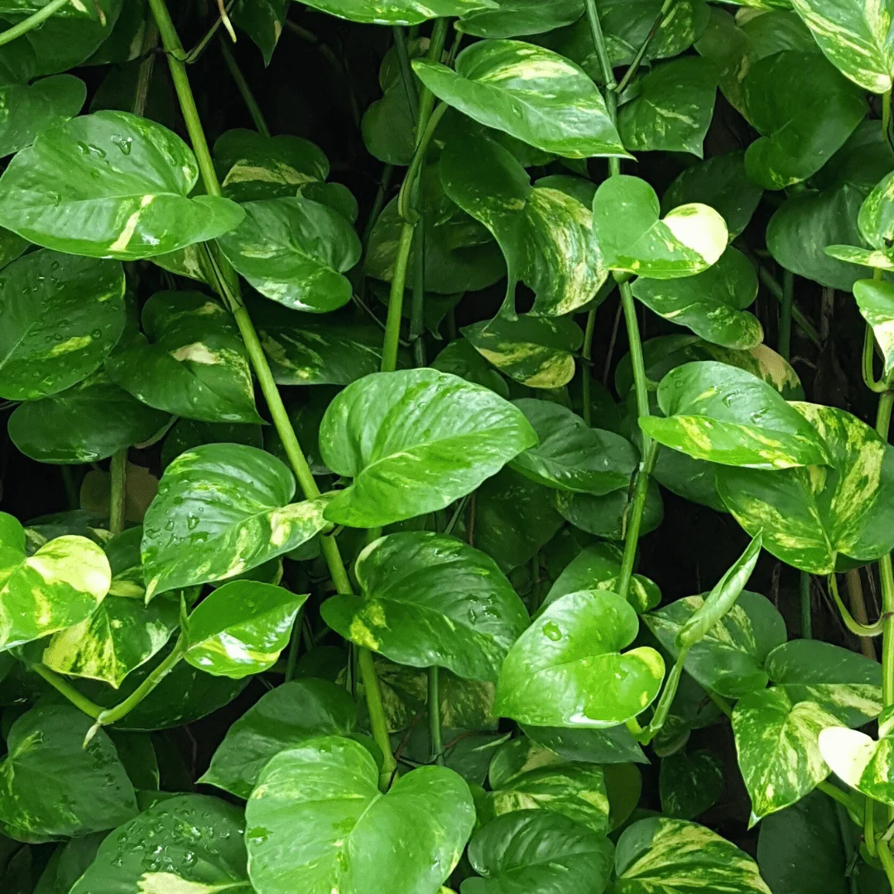
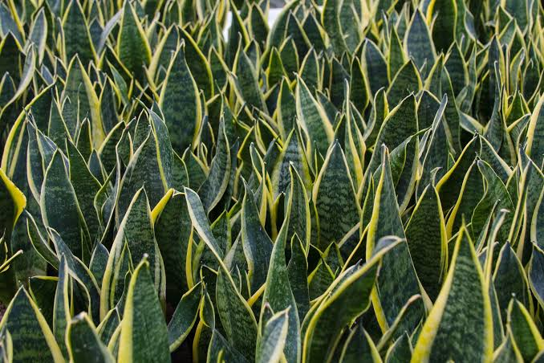
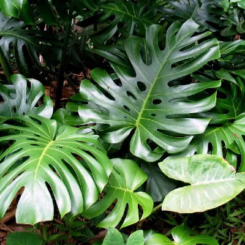

Jardim Verde
Encontre a planta perfeita para o seu ambiente
Jiboia

- Nome Científico: Epipremnum pinnatum
- Descrição: Ideal para locais com pouca luz. Conhecida por sua durabilidade e propriedades de proteção.
Espada de São Jorge

- Nome Científico: Sansevieria trifasciata
- Descrição: Ideal para locais com pouca luz. Conhecida por sua durabilidade e propriedades de proteção.
Costela de Adão

- Nome Científico: Monstera deliciosa
- Descrição: Famosa por suas folhas recortadas marcantes. Adora iluminação indireta e regas regulares.
Suculenta

- Nome Científico: Echeveria elegans
- Descrição: Pequena, em formato de rosa. Armazena água nas folhas e necessita de bastante sol direto.
Nossa Paixão pelo Verde
O Jardim Verde nasceu do desejo de conectar pessoas à natureza, trazendo mais vida, ar puro e bem-estar para dentro das casas. Acreditamos que cuidar de uma planta é uma forma simples e poderosa de praticar o autocuidado cotidianamente.